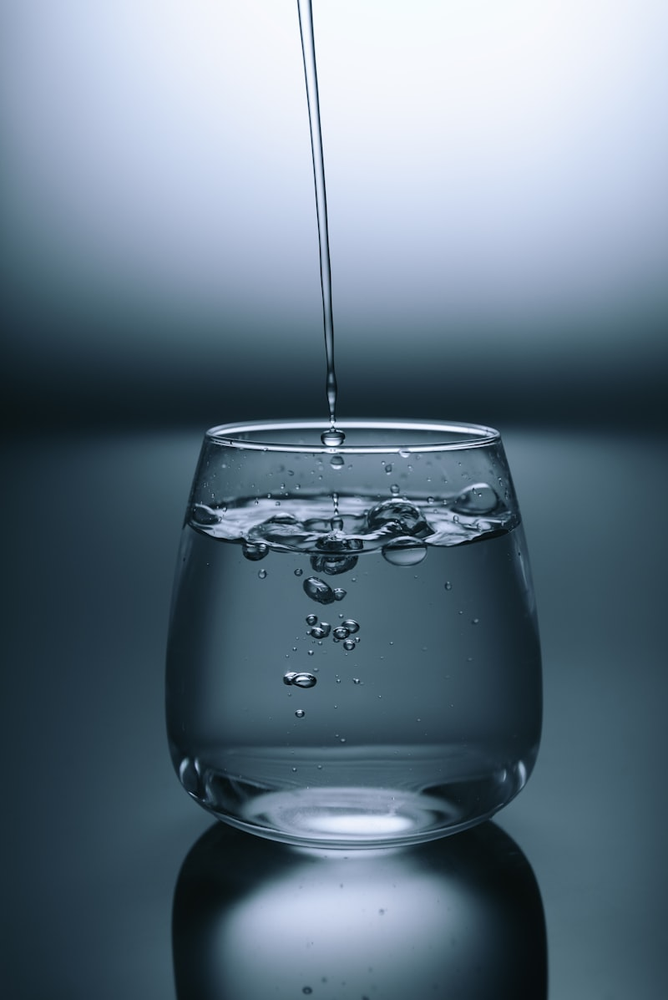

We obsess over probiotics, fiber, fermented foods, and elimination diets — but the single most impactful factor for digestive health is so obvious most of us overlook it entirely: water.
Every cell in your body depends on water, but your digestive system is uniquely sensitive to hydration status. From the moment food enters your mouth to the moment waste leaves your body, water is the unsung hero of every step. And emerging research suggests that even mild dehydration can disrupt your gut microbiome, weaken your intestinal barrier, and impair nutrient absorption in ways that cascade throughout your entire body.
Let's explore the science of hydration and digestive health — and why getting your water intake right might be the most underrated gut health strategy of all.
How Water Fuels Digestion
Digestion is a water-intensive process from start to finish. Here's a quick tour of how water enables every stage:
1. Saliva Production (The First Step)
Your salivary glands produce about 1 to 1.5 liters of saliva per day. Saliva isn't just water — it's a complex fluid containing the enzyme amylase, which begins breaking down starches, along with mucus that lubricates food for swallowing. When you're dehydrated, saliva production drops, making the initial phase of digestion less efficient and potentially contributing to dry mouth, bad breath, and difficulty swallowing.
2. Stomach Acid and Digestive Enzymes
Your stomach produces roughly 2 to 3 liters of gastric juice daily — a cocktail of hydrochloric acid, pepsinogen, and mucus. Hydrochloric acid is critical for activating pepsin (which digests protein), killing pathogens, and breaking down minerals for absorption. Without adequate hydration, your stomach simply can't produce enough gastric juice to do its job properly.
3. Pancreatic and Bile Secretions
Your pancreas releases enzymes that break down fats, proteins, and carbohydrates, while your liver produces bile — essential for fat digestion and the absorption of fat-soluble vitamins (A, D, E, K). Both of these secretions are primarily water. When you're dehydrated, the volume and concentration of these fluids can be compromised, potentially affecting your ability to digest and absorb nutrients effectively.
4. Nutrient Absorption
The small intestine absorbs the vast majority of your nutrients through finger-like projections called villi, which are covered in microvilli. This enormous surface area requires a well-hydrated environment to function. Water facilitates the transport of digested nutrients across the intestinal lining and into the bloodstream. Without adequate hydration, this transport slows down.
5. Elimination
The colon's primary job is to reabsorb water from indigestible food matter and form stool. When you're dehydrated, the colon overcompensates — pulling too much water out of the waste, resulting in hard, dry stools that are difficult to pass. Chronic dehydration is one of the most common causes of constipation, affecting millions of people who don't connect their bathroom struggles with their water intake.
Hydration and the Gut Microbiome
The relationship between hydration and the gut microbiome is a newer area of research, but early findings are compelling. The community of trillions of microorganisms living in your digestive tract exists within a fluid environment, and changes in water balance can alter which species thrive.
A 2022 study from the University of California, San Francisco, found that water intake was one of the strongest dietary predictors of gut microbiome composition in a cohort of healthy adults. Participants who drank more water showed higher levels of beneficial bacteria from the Bacteroidetes and Firmicutes phyla, while those with lower water intake had higher levels of potentially inflammatory bacteria.
"Water intake is a modifiable behavior that appears to shape the gut microbiome in ways similar to dietary fiber — yet it receives almost none of the attention." — Dr. Sofia Ramirez, microbiome researcher
How Dehydration Affects Your Microbes
Mild but chronic dehydration can affect the gut microbiome through several mechanisms:
- Reduced mucus production: The intestinal mucus layer — which houses many beneficial bacteria and protects the gut lining — is about 95% water. Dehydration thins this layer, potentially exposing the gut lining to pathogens and reducing habitat for friendly microbes.
- Slowed transit time: When stool moves more slowly through the colon, bacteria have more time to ferment undigested food — which can lead to excessive gas, bloating, and an overgrowth of gas-producing species at the expense of more beneficial ones.
- Concentrated metabolites: Dehydration concentrates the contents of the colon, potentially increasing the concentration of bacterial metabolites — including some that can be inflammatory at high levels.
- Altered pH: Adequate hydration helps maintain a healthy pH gradient throughout the digestive tract, which different bacterial species rely on for survival.
How Much Water Do You Actually Need?
The "8 glasses a day" rule is a helpful starting point, but individual needs vary significantly based on body size, activity level, climate, and diet. A more accurate approach is to let your body guide you.
A practical hydration guideline: Aim for 30–40 ml of water per kilogram of body weight (roughly 0.5–0.7 oz per pound). For a 150 lb (68 kg) person, that's about 2–2.7 liters (8–11 cups) per day. Increase intake during exercise, hot weather, or if you consume caffeine or alcohol.
A simple way to gauge hydration: check your urine color. Pale straw yellow indicates good hydration. Dark yellow or amber suggests you need to drink more water. Completely clear urine can mean you're overhydrating, which is less common but can deplete electrolytes.
Best Practices for Gut-Friendly Hydration
1. Spread Your Water Intake Throughout the Day
Drinking a liter of water all at once doesn't hydrate you as effectively as sipping consistently. Your kidneys can only process about 800–1,000 ml of water per hour; anything beyond that is excreted. Spreading intake helps your body actually use the water rather than flush it out.
2. Be Mindful of When You Drink
Many digestive health experts suggest drinking water between meals rather than during them. Large volumes of water with meals can dilute stomach acid and digestive enzymes, potentially impairing digestion. Instead, aim for a glass of water 30 minutes before meals and wait 30–60 minutes after eating before drinking heavily.
3. Consider Water Quality
Tap water varies enormously in quality depending on where you live. Chlorine and chloramine — commonly used to disinfect municipal water — can kill beneficial bacteria in your gut if consumed regularly. A simple carbon filter (pitcher or faucet attachment) removes most chlorine, chloramine, and common contaminants while leaving beneficial minerals. As we covered in our natural digestion tips article, starting with clean water is foundational to digestive health.
4. Don't Forget Electrolytes
Water alone isn't enough — your body needs electrolytes (sodium, potassium, magnesium, calcium) to absorb and utilize water properly. Excessive plain water consumption without electrolytes can actually lead to a dilutional state that stresses the kidneys. If you sweat heavily or drink more than 3 liters of water per day, consider adding a pinch of high-quality salt or an electrolyte mineral drop to your water.
5. Eat Your Water
Not all hydration comes from drinking. Many fruits and vegetables have water content above 90% and provide hydration alongside fiber, vitamins, and polyphenols that feed your gut microbiome. Cucumbers (96% water), celery (95%), watermelon (92%), strawberries (91%), and leafy greens are excellent choices. This is one reason why a whole-food diet naturally supports better hydration than one built around processed foods.
Signs You Might Be Chronically Underhydrated
Thirst is a late signal — by the time you feel thirsty, you're already mildly dehydrated. Here are subtler signs that your hydration habits may need attention:
- Frequent constipation or hard, pellet-like stools
- Brain fog or difficulty concentrating, especially in the afternoon
- Dry skin that doesn't respond to moisturizers
- Headaches, particularly tension-type headaches
- Fatigue and low energy, especially after meals (digestion is energy-intensive)
- Joint stiffness or muscle cramps
- Dark urine despite what you think is adequate intake
If three or more of these apply consistently, improving your water intake is one of the simplest and most impactful changes you can make — not just for your digestion, but for your overall vitality.
The Deeper Connection: Water and Natural Law
There's something quietly profound about the relationship between water and health. Water is the most fundamental substance on Earth — the medium through which all life processes occur. Every civilization has recognized its centrality, and every traditional healing system emphasizes clean water as the foundation of well-being.
Modern gut health research is, in many ways, rediscovering ancient wisdom: your body is not a collection of isolated systems but a unified ecosystem that depends on basic natural elements — clean water being chief among them. As we discussed in our article on self-responsibility and gut health, lasting health comes not from complex interventions but from aligning with the simple, natural laws that govern your body.
"The art of healing comes from nature, not from the physician. Therefore the physician must start from nature, with an open mind. Water is the first medicine." — Paracelsus (adapted)
Simple Hydration Protocol for Gut Health
Here's a practical daily hydration routine rooted in both ancient wisdom and modern digestive science:
- Upon waking: 300–500 ml of room-temperature filtered water (with a squeeze of lemon if tolerated). This rehydrates your body after the overnight fast and stimulates peristalsis — the wave-like contractions that move waste through your colon.
- 20–30 minutes before each meal: 200–300 ml of water to prepare digestive secretions without diluting stomach acid.
- Between meals: Sip water throughout the morning and afternoon. Aim for 150–200 ml per hour during waking hours.
- After exercise: Replenish with water plus a pinch of salt or electrolyte minerals.
- With herbal teas: Unsweetened herbal teas (ginger, peppermint, chamomile) count toward hydration and offer additional digestive benefits.
💧 The foundation of every health journey is water. Before you reach for expensive supplements or complicated protocols, start with the simplest thing your body needs: clean, pure hydration. When your digestive system is properly hydrated, every other gut health strategy — from fermented foods to targeted supplementation — works more effectively. Explore GutWise natural solutions to complement your hydration routine and support your body's innate wisdom.
The Bottom Line
Hydration is the most overlooked, underrated factor in digestive health. Without adequate water, your body cannot produce enough digestive juices, maintain healthy gut bacteria, absorb nutrients efficiently, or eliminate waste comfortably.
Yet most of us are walking around in a state of mild, chronic dehydration — not severe enough to cause medical concern, but enough to subtly undermine our digestion, energy, and mood day after day.
The fix is simple: drink clean water consistently throughout the day, pay attention to your body's signals, and remember that true health is built on the fundamentals — not the fads.
Your gut is 70% water by volume. Treat it accordingly.
Read more: Fermented foods and how they boost your microbiome →
For informational purposes only. This content is not medical advice. Consult a healthcare professional before making significant changes to your diet or hydration practices.